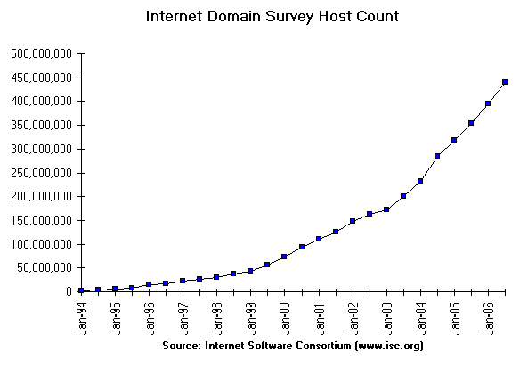

Chaque système raccordé à l'Internet est identifié par un identificateur unique (pas d'homonyme) qui seul permet de communiquer avec lui, c'est son adresse-IP.
Cet identificateur de 32 bits est "confortable" pour les programmes (et les programmeurs), mais difficile à mémoriser et à manipuler pour les personnes. Aussi un autre identificateur a-t-il été ajouté pour faciliter la désignation des systèmes par les personnes : le nom de système.
Comme il n'y a pas de formule pour faire la correspondance entre le nom et l'adresse-IP d'un système, elle doit être obtenue à l'aide une table ou annuaire.
au début : une table par système (le fichier hosts)
Aux débuts de l'Internet, le nombre de systèmes raccordés était très petit (4 systèmes en 1969, 213 en 1981).
Une simple table mémorisée dans un fichier de chaque système, et une procédure de recherche par balayage étaient suffisantes.
C'est le fichier hosts (Unix : /etc/hosts, Microsoft : C:\WINDOWS\HOSTS.TXT).
- Exercice 1-1
- Combien y a-t-il de systèmes nommés dans les fichiers hosts des systèmes fc.isima.fr et etud ?
(par la commande : more /etc/hosts exécutée sur chaque système)MAIS une modification (nouveau système, changement de nom ou d'adresse-IP...) nécessite d'effectuer la modification dans la table de chaque système, et ce n'est pas viable au-delà de quelques sytèmes.
Deux solutions ont été élaborées au cours des années 80 et sont encore très utilisées :
- le NIS, orienté sur le partage d'informations d'administration entre les systèmes d'une organisation,
- le DNS, orienté sur les seules informations de traduction nom<-->adresse-IP des systèmes.
NIS : le MEME ensemble d'informations d'administration
pour TOUS les systèmes d'UNE organisationNIS (Network Information Service) a été spécifié par Sun Microsystems.
Ce service permet de gérer de manière centralisée des informations d'administration de systèmes, identiques pour tout un groupe de systèmes, en particulier l'annuaire des noms de systèmes du groupe.
DNS : un annuaire mondial des systèmes
Avec l'explosion de l'Internet, le nombre de systèmes désignés par un nom grandit très fortement (source : http://www.isc.org/ds/) :
 Un tel nombre de systèmes rend impossible le maintien à jour de ces tables, même pour les seuls systèmes qui ont un nom "officiel" (72 millions en juillet 2000, 109 millions en janvier 2001, 147 millions en janvier 2002), car :
- la taille de l'annuaire est trop grande pour l'installer sur chaque système, ou même sur un système par organisation,
- le taux de mise à jour est grand (plus de 37 millions d'ajouts en 2000, un peu plus en 2001, soit plus d'un par seconde) (ce qui entraine qu'il serait impossible d'avoir une copie complète à jour),
- la méthode de nommage "plat" implique que chaque système ait un nom différent, et même en utilisant tous les dictionnaires, c'est difficile...
Ces considérations (RFC1034-Intro) ont amené à la conception du DNS (Domain Name System), qui :
- spécifie un espace de nommage (comment construire et organiser les noms pour permettre un très grand nombre de noms différents ?),
- spécifie la forme de l'annuaire, les contraintes de disponibilité et sa mise à jour,
- spécifie une application d'interrogation.
le futur proche : LDAP
D'autres propositons de spécifications d'annuaire ont été élaborées (X500 de l'ITU-T, trop lourd, et NIS+ du Sun), mais actuellement, la solution qui semble la plus "adoptée" est LDAP (Lightweight Directory Access Protocol), spécifié par l'IETF.
Microsoft s'est inspiré de LDAP pour bâtir Active Directory.LDAP propose une organisation d'informations structurée en arborescence hiérarchique dans laquelle l'administrateur de l'annuaire peut ajouter des classes d'objets.
Tout sur LDAP (au Comité Réseau des Universités, http://www.cru.fr), mais commencer par le tutoriel...